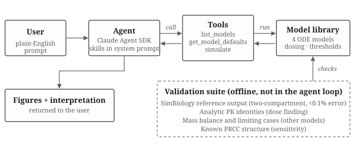

Research
A general collection of different types of projects I've initiated and worked on.
1. Multiscale immunology
My Ph.D. at the University of Michigan (2016 to 2021, advisors Denise Kirschner and Jennifer Linderman) modeled T cells in Mycobacterium tuberculosis infection at the scale of the cell, the granuloma, the lung, and the whole host. HostSim, the first whole-host, multi-scale model of the immune response, simulates virtual hosts and shows that early immune events predict infection outcomes. CaliPro, the calibration protocol I developed for these models, is well cited and used across the community.
2. QSP for biologics and cell therapies
At Genentech (2021 to present, Principal Scientist since 2023) I build reusable QSP platform models and develop mechanistic models to support drug development. The oncology platforms cover TCR-engineered and CAR T cell therapies, ADCs, and various bispecifics. In immunology, platform models guide the molecular design of multi-specifics for COPD and IBD. Together they have supported more than 12 programs, from therapeutic design to first-in-human dose selection and clinical translation strategy.
3. Digital twins
A digital twin is a mechanistic model fit to an individual patient. In a 2024 paper in npj Systems Biology and Applications, twins of patients with solid tumors treated with TCR-engineered T cells identify the stem-cell-memory-like subset (Tscm) as critical for persistence. Genentech made a short video about the approach, and I have presented it at ACoP (2025), the SimBiology Forum (2024), and a DIA cell therapy seminar (2023). I co-developed gQSPTwin, a tool that automates digital twin generation.
4. Machine learning for pharmacokinetics
The neural ODE framework for preclinical PK of large molecules is the subject of a 2025 patent application and an ACoP 2024 poster. I also explored sparse identification of nonlinear dynamics (SINDy) for data-driven PK models. At ACoP 2024 I spoke on protein language models that bring PKPD considerations into early antibody design, and I co-chaired the session on deep learning in PKPD and pharmacometrics.
LEAP is a bioinformatics method developed in-house that analyzes genomic data (single-cell or bulk RNA-seq) to predict clinical target-mediated drug disposition (TMDD) for large molecule therapeutics. A provisional patent application was filed in 2026.
5. Agentic modeling
I work on agent systems that build, run, and check mechanistic models. At ACoP 2026 I gave a talk on LUCY and co-chaired the AI/ML Roller Coaster session. [abstract]
LUCY (Logical Understanding of Complex sYstems) is a multi-agent framework in which several expert agents design, calibrate, and return a mechanistic model from a single prompt and dataset. A provisional patent application was filed in 2026. A paper is in draft, with submission to a journal expected by the end of 2026.
pkpd-model-studio
An open-source library of four mechanistic PK/PD models with an agent-driven dashboard. The models are transcribed from the SimBiology models in the gPKPDSim paper (J Pharmacokinet Pharmacodyn 2017). All models and data are public or synthetic.
The agent runs on the Claude Agent SDK. It calls three tools to list models, read default parameters, and simulate dose sweeps, parameter variants, repeat dosing, and threshold crossings. Beyond forward simulation, the library solves for the dose that reaches a target Cmax, trough, AUC, or time above a threshold, using bisection root-finding. It also ranks which parameters drive an outcome with Latin hypercube sampling and partial rank correlation (PRCC), with multiple-comparison correction.

Validation. The two-compartment model matches literal SimBiology output to under 0.1% maximum relative error, using the paper's fitted parameters. No reference output was recoverable for the other three models, so they pass structural checks instead: mass balance, exact reduction to the two-compartment model in the no-binding limit, the expected direction of response in all four indirect-response variants, and dose superposition. Dose finding is checked against analytic identities (for an IV bolus, Cmax equals dose over V1). Sensitivity analysis is checked against known structure: Cmax is driven almost entirely by V1 and AUC by CL.